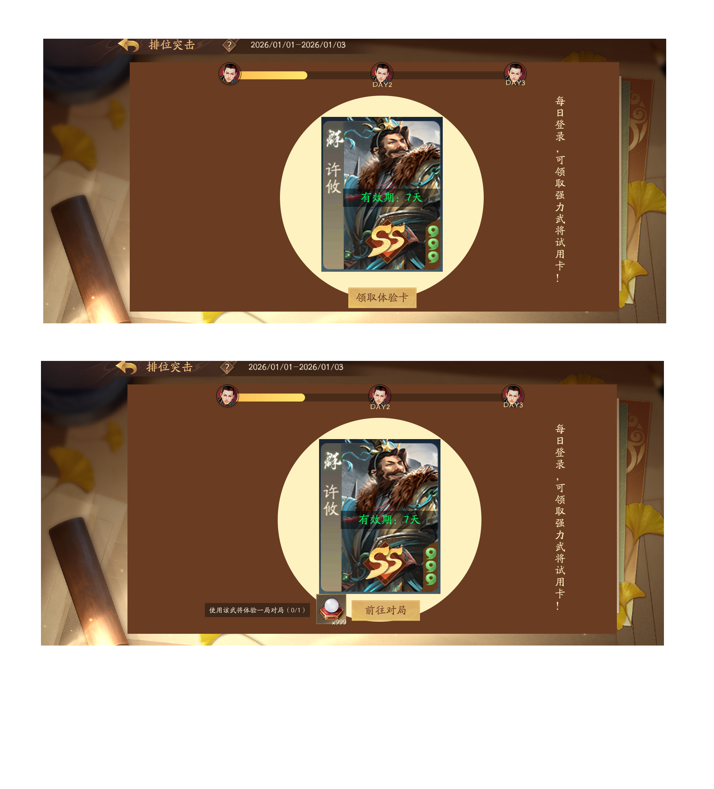

一、背景与目标
项目背景
三国杀一将成名当前面临日流失率偏高的问题，部分用户处于"预流失"状态——他们还未彻底流失，但活跃度已明显下滑。 为此，我们建立了预流失干预链路，在用户即将流失的窗口期进行召回干预，目标是将这批用户拉回并留存。
核心目标
关键指标
| 指标 | 定义 | 当前基准 |
|---|---|---|
| 登录转化率 | 推送触达 → 打开APP登录 | 12.1%（对照组） |
| 任务完成率 | 登录 → 完成召回任务 | 55.8%（对照组） |
| 次留率 | 完成任务 → 次日登录 | 40.3%（对照组） |
用户与场景
| 目标用户 | 被圈选的预流失用户（当前约50万人/期） |
| 干预时机 | 用户处于预流失窗口期，尚未彻底流失 |
| 干预方式 | APP推送 + 弹窗引导 + 任务激励 |
| 预期结果 | 用户完成登录+对局任务，次日留存 |
二、三组漏斗数据
数据来源：预流失标签表 + logout表 + sgsnew_task_his（taskid 1311331-1311348）
| 组别 | 圈选用户 | 登录用户 | 登录转化率 | 完成任务 | 任务完成率 | 次留率 |
|---|---|---|---|---|---|---|
| 数据部实验组 | 341,530 | 41,356 | 12.1% | 23,087 | 55.8% | 40.3% |
| 对照组 | 102,930 | 12,131 | 11.8% | — | — | 40.3% |
| 算法实验组 | 61,372 | 19,905 | 32.4% | 6,805 | 34.2% | 39.1% |
关键发现：算法实验组登录率32.4%最高，但次留率39.1%最低——原因：算法圈选了近期活跃下降用户，本身更易触达，但触达后留存质量低。数据部实验组/对照组登录率仅~12%，说明85%以上用户未被有效触达。
三、各官阶用户分布与次留率
| 官阶 | 人数 | 占比 | 次留率 | 优先级 |
|---|---|---|---|---|
| 骁卒 | 4,447 | 8.6% | 35.96% | ★★★ |
| 校尉 | 2,326 | 4.5% | 30.14% | ★★★ |
| 郎将 | 5,337 | 10.3% | 52.35% | ★★★★ |
| 偏将军 | 23,034 | 44.5% | 43.64% | ★★★★★ |
| 将军 | 9,240 | 17.9% | 47.86% | ★★ |
| 国护军 | 1,424 | 2.8% | 19.52% | ★★★ |
用户结构洞察：偏将军23,034人（44.5%）是最大群体，次留率43.64%； 骁卒+校尉合计占圈选29.9%（数据部实验组口径），但次留率最低（30-36%），是任务简化方案的主要受益群体。
数据现状分析
瓶颈识别
APP推送覆盖率当前0%，触达基数接近于零，扩大推送覆盖是最高优先级
算法实验组骁卒+校尉+郎将占圈选74.4%，但占完成任务仅22.8%——骁卒/校尉被大量触达但完不成任务
次留率仅19.52%，常规干预无效，需情感召回而非常规任务干预
机会点
覆盖50%，触达用户数翻倍
任务完成率提升，尤其是低官阶用户群体
提升任务吸引力，增加连续参与
数据需求总结
详见 数据需求_v1.0.md
- · 三组漏斗数据（数据部实验组/对照组/算法实验组）
- · 各官阶次留率（骁卒/校尉/郎将/偏将军/将军/国护军）
- · sgsnew_task_his 任务完成数据
- · APP推送覆盖率精确值（预计50%）
- · 弹窗展示率（需新增埋点 F3）
- · 任务领取率（需新增埋点 F3）
结论：数据充分，可以进入方案设计。 弹窗展示率和任务领取率的缺失可作为后续优化点，不影响MVP方案设计。
预流失用户 vs 大盘用户 模式分布对比
数据来源：sgsnew_user_tag（预流失标签表）+ sgsnew_game_his（牌局表）· 时间：2026-04-28
| 模式 | 大盘用户 | 大盘占比 | 预流失用户 | 预流失占比 | 占比差值 | 大盘人均 | 预流失人均 | 牌局差值 | 预流失胜率 |
|---|---|---|---|---|---|---|---|---|---|
| 2v2排位 | 146,860 | 26.8% | 6,983 | 32.3% | +5.5% | 9.91 | 7.31 | -2.59 | 54.2% |
| 斗地主 | 84,829 | 15.5% | 2,000 | 9.3% | -6.2% | 8.09 | 5.42 | -2.67 | 51.0% |
| 上林出猎 | 84,665 | 15.4% | 1,349 | 6.2% | -9.2% | 2.31 | 2.23 | -0.08 | 98.3% |
| 自走棋 | 36,391 | 6.6% | 1,032 | 4.8% | -1.8% | 5.11 | 3.78 | -1.33 | 27.7% |
| 身份匹配(4) | 15,626 | 2.8% | 536 | 2.5% | -0.3% | 8.39 | 4.51 | -3.88 | 38.4% |
| 烽火连天 | 19,127 | 3.5% | 243 | 1.1% | -2.4% | 8.52 | 8.32 | -0.21 | 79.0% |
| 2v2巅峰 | 12,952 | 2.4% | 237 | 1.1% | -1.3% | 6.11 | 7.09 | +0.98 | 48.4% |
| 其他模式 | 141,341 | 25.8% | 5,397 | 25.0% | -0.8% | — | — | — | — |
| 合计 | 548,883 | 100% | 21,591 | 100% | — | — | — | — | — |
关键发现：
- 1. 2v2排位占比偏高：预流失用户占32.3%，比大盘高5.5%，是最集中的模式
- 2. 斗地主/上林出猎占比偏低：预流失用户比大盘分别低6.2%、9.2%，他们不偏好这类模式
- 3. 自走棋胜率异常低：仅27.7%，可能是流失原因之一
- 4. 2v2巅峰人均反而更高：预流失用户比大盘多0.98场，存在"秀操作"心理
数据可视化原型
完整原型：
prototypes/prototype_v1.0.html
· 支持 ?focus=funnel|detail|trend|suggest|plandetail 参数聚焦特定页面
背景与问题：排位流失现象分析
核心问题：预流失用户中，2V2排位占比偏高
需要判断：这是 真实偏好（排位用户确实更容易流失）还是 系统偏差（业务策略+算法预测导致的假象）？
一、真实流失分组分析
标签定义：以"4/29-5/5七天内无任何登录"作为真实流失标签（不依赖策略+算法预测）
真实流失用户中，少数排位重度用户拉高了总量占比。人均口径更能反映个体偏好：真实流失用户的排位偏好比大盘更低
核心发现：真实流失用户的核心特征是"低活跃"——周均仅10.39局（未流失组60.23局)，各模式绝对局数都远低于未流失用户
未流失组人均排位占比 35.4%
差异很小
未流失组排位占比 51.3%
流失的排位用户更依赖单一模式
二、分模式对比
按用户历史30天内对局数量最多的模式分组，计算各模式下的真实流失率
| 模式偏好 | 真实流失率 | 对比 |
|---|---|---|
| 排位玩家 | 6.1% | ▲ |
| 自走棋类玩家 | 5.1% | △ |
| 斗地主玩家 | 3.4% | ▼ |
结论：排位玩家的真实流失率（6.1%）确实高于自走棋类（5.1%）和斗地主（3.4%）
三、综合结论
方案设计
详见 方案设计_v1.0.md
MVP 范围（已确认）
APP推送覆盖率从0%提升至50%，触达用户数大幅增加
实施难度：低 | 依赖：Push系统支持
任务简化为"登录+任意对局1次"，配武将体验卡激励
实施难度：中 | 依赖：任务系统差异化配置
暂缓方向
优先召回"有召回价值"的用户，等数据支撑后再决策
专属情感召回（专属文案、限时珍稀武将体验），作为后续独立优化方向
方案C 详细说明
- 任务简化：全员任务统一为"登录 + 任意对局1次"（不分官阶）
- 武将体验卡激励：连续3日，每日可领取武将体验卡 + 牌局奖励
- 体验卡出现时机：首局（PVE局）100%出现
- 体验卡有效期：7天
- 领取方式：在单独的功能活动界面，手动领取每一日的奖励和任务奖励
- 中断处理：Day1领卡未完成对局，Day2可正常登录领卡
Figma 设计稿
弹屏界面

活动界面一

活动界面二

活动界面三

方案流程图
完整流程图： flows/flowchart_v1.0.html
武将体验卡 + 牌局奖励配置
适用于：预流失召回链路优化 · 方案C
| 等级段 | 登录武将试用1 | 登录武将试用2 | 登录武将试用3 | 牌局奖励 |
|---|---|---|---|---|
| 60级以下 | 李傕 / 李傕郭汜 / 戏志才 (60符) | 阎柔 / 尹夫人 / 邓芝 (500符) | 牛辅 / 刘永 / 羊祜 (1000符) | 对应传说皮肤使用 + 角色经验 |
| 61-100级 郎将+偏将军 | 牛辅 / 刘永 / 羊祜 (1000符) | 胡班 / 冯方 / 赵嫣 (1500符) | 吴范 / 杜夔 / 王昶 (2000符) | 对应传说皮肤使用 + 朱砂 (800) |
| 101-200级 偏将军+将军+上将军 | 吴范 / 杜夔 / 王昶 (2000符) | 黄承彦 / 滕公主 / 樊玉凤 (3000符) | 张嫙 / 郭照 / 吕玲绮 (5000符) | 对应传说皮肤使用 + 三国资源宝箱 |
| 国护军及以上 | 谋郭嘉 / 曹宪 / 乐祢衡 (T3) | 庞凤衣 / 黄舞蝶 / 诸葛京 (T2) | 神庞统 / 神黄忠 / 神钟会 (T1) | 对应传说皮肤使用 + 金豆 |
规则说明： 每档每日可领取1张武将体验卡（登录即领）+ 1份牌局奖励（完成对局后手动领取）。 武将从第1天到第3天逐渐稀缺（强度递增），牌局奖励随等级段提升资源价值。
每日任务节奏
打开APP → 领取武将试用卡1 + 牌局奖励入口
任意对局1次（PVP/PVE）→ 武将体验卡首局100%出现
活动界面手动领取牌局奖励
中断处理：Day1领了卡但未完成对局，Day2仍可正常登录并领取武将试用卡2。 体验卡有效期7天，可在活动期间内灵活使用。
预流失用户的核心矛盾
他们没有完全流失
如不干预，将彻底流失
预流失用户体验体系
模式体验
给用户新鲜感，打破当前疲惫感
适合：2V2疲惫用户
适合：压力释放型用户
目标体验
帮助用户重新找到游戏目标感
降低任务难度
长期激励目标
社交体验
通过社交羁绊留住用户
高活跃好友优先推送
无师傅时弱引导
各模式特权对比
| 模式 | 参与率 | 预流失占比 | 推荐激励 | 优先级 |
|---|---|---|---|---|
| 2v2排位 | 26.8% | 32.3% | 武将体验卡、段位保护 | P0 |
| 斗地主 | 15.5% | 9.3% | 金豆激励 | P1 |
| 自走棋 | 6.6% | 4.8% | 保护机制 | P2 |
预流失干预触发链路
版本记录
| 版本 | 日期 | 内容 | 状态 |
|---|---|---|---|
| v1.3 | 2026-05-26 | 新增：排位流失现象深度分析 · 真实流失分组分析（三种口径对比） · 关键洞察：排位依赖 = 流失风险（69.4% vs 51.3%） · 分模式真实流失率对比（排位6.1% > 自走棋5.1% > 斗地主3.4%） · 综合结论：重度排位玩家确实更容易流失 |
当前版本 |
| v1.2 | 2026-05-26 | 新增：预流失用户体验体系 · 模式体验（2V2优化/斗地主/PVE/自走棋） · 目标体验（战令优化/局外目标） · 社交体验（好友/师徒/公会） · 各模式特权对比表 · 干预触发链路（组合触发+双模型筛选） |
已归档 |
| v1.1 | 2026-05-20 | 更新：预流失用户牌局数据、模式分布对比 | 已归档 |
| v1.0 | 2026-05-08 | 初始版本：方案A+方案C确认，武将体验卡5档配置 | 已归档 |
交互原型
点击下方按钮可切换查看不同界面